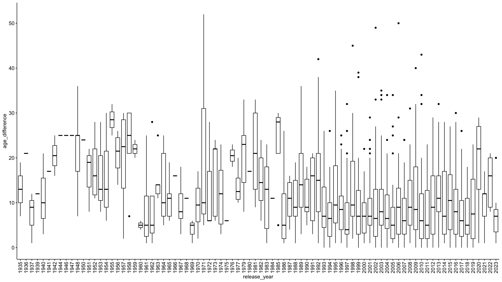

pacman::p_load(
here,
magrittr,
tidyverse,
janitor,
easystats,
sjmisc,
ggpubr)Exercise 03: üî® Working with R
Hollywood Age Gap
 Download source file
Download source file
 Open this exercise in interactive and executable environment
Open this exercise in interactive and executable environment
Background
- The best way to learn R is by trying. This document tries to display a version of the “normal” data processing procedure.
- Use
tidytuesdaydata as an example to showcase the potential
Todays’s data basis: Hollywood Age Gaps
An informational site showing the age gap between movie love interests.
The data follows certain rules:
- The two (or more) actors play actual love interests (not just friends, coworkers, or some other non-romantic type of relationship)
- The youngest of the two actors is at least 17 years old
- Not animated characters
Packages
Zum Laden der Pakete wird das Paket
pacman::pload()genutzt, dass gegenüber der herkömmlichen Methode mitlibrary()eine Reihe an Vorteile hat:- Prägnante Syntax
- Automatische Installation (wenn Paket noch nicht vorhanden)
- Laden mehrerer Pakete auf einmal
- Automatische Suche nach
dependencies
Codechunks aus der Sitzung
Die erste “Runde” der Datenaufbereitung
Datenimport via URL
| Variable | Description |
|---|---|
movie_name |
Name of the film |
release_year |
Release year |
director |
Director of the film |
age_difference |
Age difference between the characters in whole years |
couple_number |
An identifier for the couple in case multiple couples are listed for this film |
actor_1_name |
The name of the older actor in this couple |
actor_2_name |
The name of the younger actor in this couple |
actor_1_birthdate |
The birthdate of the older member of the couple |
actor_2_birthdate |
The birthdate of the younger member of the couple |
actor_1_age |
The age of the older actor when the film was released |
actor_2_age |
The age of the younger actor when the film was released |
# Import data from URL
age_gaps <- read_csv("http://hollywoodagegap.com/movies.csv") %>%
janitor::clean_names()
# Check data set
age_gaps# A tibble: 1,176 × 12
movie_name release_year director age_difference actor_1_name actor_1_gender
<chr> <dbl> <chr> <dbl> <chr> <chr>
1 Harold and … 1971 Hal Ash… 52 Bud Cort man
2 Venus 2006 Roger M… 50 Peter O'Too… man
3 The Quiet A… 2002 Phillip… 49 Michael Cai… man
4 The Big Leb… 1998 Joel Co… 45 David Huddl… man
5 Beginners 2010 Mike Mi… 43 Christopher… man
6 Poison Ivy 1992 Katt Sh… 42 Tom Skerritt man
7 Whatever Wo… 2009 Woody A… 40 Larry David man
8 Entrapment 1999 Jon Ami… 39 Sean Connery man
9 Husbands an… 1992 Woody A… 38 Woody Allen man
10 Magnolia 1999 Paul Th… 38 Jason Robar… man
# ℹ 1,166 more rows
# ℹ 6 more variables: actor_1_birthdate <date>, actor_1_age <dbl>,
# actor_2_name <chr>, actor_2_gender <chr>, actor_2_birthdate <chr>,
# actor_2_age <dbl>Initiale Überprüfung der Daten
Sind die Daten “technisch korrekt”?
Überblick über die Daten
age_gaps %>% glimpse()Rows: 1,176
Columns: 12
$ movie_name <chr> "Harold and Maude", "Venus", "The Quiet American", "…
$ release_year <dbl> 1971, 2006, 2002, 1998, 2010, 1992, 2009, 1999, 1992…
$ director <chr> "Hal Ashby", "Roger Michell", "Phillip Noyce", "Joel…
$ age_difference <dbl> 52, 50, 49, 45, 43, 42, 40, 39, 38, 38, 36, 36, 35, …
$ actor_1_name <chr> "Bud Cort", "Peter O'Toole", "Michael Caine", "David…
$ actor_1_gender <chr> "man", "man", "man", "man", "man", "man", "man", "ma…
$ actor_1_birthdate <date> 1948-03-29, 1932-08-02, 1933-03-14, 1930-09-17, 192…
$ actor_1_age <dbl> 23, 74, 69, 68, 81, 59, 62, 69, 57, 77, 59, 56, 65, …
$ actor_2_name <chr> "Ruth Gordon", "Jodie Whittaker", "Do Thi Hai Yen", …
$ actor_2_gender <chr> "woman", "woman", "woman", "woman", "man", "woman", …
$ actor_2_birthdate <chr> "1896-10-30", "1982-06-03", "1982-10-01", "1975-11-0…
$ actor_2_age <dbl> 75, 24, 20, 23, 38, 17, 22, 30, 19, 39, 23, 20, 30, …Korrekturen
age_gaps_correct <- age_gaps %>%
mutate(
across(ends_with("_birthdate"), ~as.Date(.)) # set dates to dates
)Überprüfung Lageparameter
age_gaps_correct %>% descr()
## Basic descriptive statistics
var type label n NA.prc mean sd se md
release_year numeric release_year 1176 0 2000.78 16.64 0.49 2004
age_difference numeric age_difference 1176 0 10.46 8.52 0.25 8
actor_1_age numeric actor_1_age 1176 0 39.99 10.92 0.32 39
actor_2_age numeric actor_2_age 1176 0 31.25 8.44 0.25 30
trimmed range iqr skew
2003.68 88 (1935-2023) 15.00 -1.69
9.39 52 (0-52) 12.00 1.19
39.42 64 (17-81) 15.00 0.54
30.42 64 (17-81) 9.25 1.37Die ersten Datenexplorationen
Wie sind die Altersunterschiede verteilt?
age_gaps_correct %>%
ggplot(aes(x = age_difference)) +
geom_bar() +
theme_pubr()In welchen Filmen ist der Altersunterschied am höchsten?
age_gaps_correct %>%
arrange(desc(age_difference)) %>%
select(movie_name, age_difference, release_year) # A tibble: 1,176 × 3
movie_name age_difference release_year
<chr> <dbl> <dbl>
1 Harold and Maude 52 1971
2 Venus 50 2006
3 The Quiet American 49 2002
4 The Big Lebowski 45 1998
5 Beginners 43 2010
6 Poison Ivy 42 1992
7 Whatever Works 40 2009
8 Entrapment 39 1999
9 Husbands and Wives 38 1992
10 Magnolia 38 1999
# ℹ 1,166 more rowsage_gaps_correct %>%
filter(release_year >= 2022) %>%
arrange(desc(age_difference)) %>%
select(
movie_name, age_difference, release_year,
actor_1_name, actor_2_name) # A tibble: 12 × 5
movie_name age_difference release_year actor_1_name actor_2_name
<chr> <dbl> <dbl> <chr> <chr>
1 The Bubble 21 2022 Pedro Pascal Maria Bakal…
2 Oppenheimer 20 2023 Cillian Mur… Florence Pu…
3 The Northman 20 2022 Alexander S… Anya Taylor…
4 The Lost City 16 2022 Channing Ta… Sandra Bull…
5 Barbie 10 2023 Ryan Gosling Margot Robb…
6 Everything Everywhere … 9 2022 Ke Huy Quan Michelle Ye…
7 Top Gun: Maverick 8 2022 Tom Cruise Jennifer Co…
8 Oppenheimer 7 2023 Cillian Mur… Emily Blunt
9 Your Place or Mine 7 2023 Ashton Kutc… Zoë Chao
10 Your Place or Mine 5 2023 Jesse Willi… Reese Withe…
11 Your Place or Mine 2 2023 Ashton Kutc… Reese Withe…
12 You People 1 2023 Jonah Hill Lauren Lond…Gibt es einen Zusammenhang zwischen Altersunterschied und Release?
(Durchschnitts-)Unterschied nach Jahren
age_gaps_correct %>%
group_by(release_year) %>%
summarise(age_difference_mean = mean(age_difference)) %>%
ggplot(aes(release_year, age_difference_mean)) +
geom_col() +
theme_pubr()Verteilung nach Jahren
ggpubr::ggboxplot(
data = age_gaps_correct,
x = "release_year",
y = "age_difference",
) +
# Rotate x-axis labels by 90 degrees
theme(
axis.text.x = element_text(
angle = 90,
vjust = 0.5,
hjust=1)) 
Überprüfung der Korrelation
age_gaps %>%
select(release_year, age_difference) %>%
correlation::correlation()# Correlation Matrix (pearson-method)
Parameter1 | Parameter2 | r | 95% CI | t(1174) | p
----------------------------------------------------------------------------
release_year | age_difference | -0.22 | [-0.27, -0.16] | -7.56 | < .001***
p-value adjustment method: Holm (1979)
Observations: 1176Schätzung OLS
# Schätzung des Models
mdl <- lm(age_difference ~ release_year, data = age_gaps_correct)
# Output
mdl %>% parameters::parameters()Parameter | Coefficient | SE | 95% CI | t(1174) | p
------------------------------------------------------------------------
(Intercept) | 231.15 | 29.20 | [173.86, 288.44] | 7.92 | < .001
release year | -0.11 | 0.01 | [ -0.14, -0.08] | -7.56 | < .001mdl %>% performance::model_performance()# Indices of model performance
AIC | AICc | BIC | R2 | R2 (adj.) | RMSE | Sigma
------------------------------------------------------------------
8326.022 | 8326.043 | 8341.232 | 0.046 | 0.046 | 8.319 | 8.326mdl %>% report::report()We fitted a linear model (estimated using OLS) to predict age_difference with
release_year (formula: age_difference ~ release_year). The model explains a
statistically significant and weak proportion of variance (R2 = 0.05, F(1,
1174) = 57.12, p < .001, adj. R2 = 0.05). The model's intercept, corresponding
to release_year = 0, is at 231.15 (95% CI [173.86, 288.44], t(1174) = 7.92, p <
.001). Within this model:
- The effect of release year is statistically significant and negative (beta =
-0.11, 95% CI [-0.14, -0.08], t(1174) = -7.56, p < .001; Std. beta = -0.22, 95%
CI [-0.27, -0.16])
Standardized parameters were obtained by fitting the model on a standardized
version of the dataset. 95% Confidence Intervals (CIs) and p-values were
computed using a Wald t-distribution approximation.üìã Exercise: Welche Rolle spielt das Geschlecht?
Spielt das Geschlecht eine Rolle?
- Der folgende Abschitt befasst sich nun ergänzend mit der Frage, welche Rolle das Geschlecht mit Blick auf die “Gültigkeit” der vorherigen Ergebnisse spielt
- Dazu sind jedoch weitere Explorations- und Überarbeitungsschritte notwendig
Übeprüfung der _gender-Variablen
Exercise 1
Nutzen Sie die Funktion sjmisc::frq() und schauen Sie sich im Datensatz age_gaps_correct die Variablen actor_1_gender und actor_2_gender an.
age_gaps_correct %>%
frq(actor_1_gender, actor_2_gender)actor_1_gender <character>
# total N=1176 valid N=1176 mean=1.01 sd=0.12
Value | N | Raw % | Valid % | Cum. %
---------------------------------------
man | 1160 | 98.64 | 98.64 | 98.64
woman | 16 | 1.36 | 1.36 | 100.00
<NA> | 0 | 0.00 | <NA> | <NA>
actor_2_gender <character>
# total N=1176 valid N=1176 mean=1.99 sd=0.12
Value | N | Raw % | Valid % | Cum. %
---------------------------------------
man | 17 | 1.45 | 1.45 | 1.45
woman | 1159 | 98.55 | 98.55 | 100.00
<NA> | 0 | 0.00 | <NA> | <NA>
Exercise 2
Nutzen Sie die Funktion sjmisc::flat_talbe() und den Datensatz age_gaps_correct um eine Kreuztabelle der Variablen actor_1_gender und actor_2_gender zu erstellen.
age_gaps_correct %>%
select(actor_1_gender, actor_2_gender) %>%
flat_table() actor_2_gender man woman
actor_1_gender
man 12 1148
woman 5 11Sind die Daten “konsistent”?
Überprüfung der Sortierung
age_gaps_correct %>%
summarise(
p1_older = mean(actor_1_age > actor_2_age), # older person first?
p1_male = mean(actor_1_gender == "man"), # male person first?
p_1_first_alpha = mean(actor_1_name < actor_2_name) # alphabetical order?
)# A tibble: 1 × 3
p1_older p1_male p_1_first_alpha
<dbl> <dbl> <dbl>
1 0.811 0.986 0.5Überprüfung der Anzahl pro Paare pro Film
# Create data
couples <- age_gaps_correct %>%
group_by(movie_name) %>%
summarise(n = n())
# Distribution
couples %>% frq(n)n <integer>
# total N=843 valid N=843 mean=1.40 sd=0.75
Value | N | Raw % | Valid % | Cum. %
--------------------------------------
1 | 610 | 72.36 | 72.36 | 72.36
2 | 160 | 18.98 | 18.98 | 91.34
3 | 54 | 6.41 | 6.41 | 97.75
4 | 14 | 1.66 | 1.66 | 99.41
5 | 3 | 0.36 | 0.36 | 99.76
6 | 1 | 0.12 | 0.12 | 99.88
7 | 1 | 0.12 | 0.12 | 100.00
<NA> | 0 | 0.00 | <NA> | <NA># Movies with a loot of couples
couples %>%
filter(n > 3) %>%
arrange(desc(n))# A tibble: 19 × 2
movie_name n
<chr> <int>
1 Love Actually 7
2 The Family Stone 6
3 A View to a Kill 5
4 He's Just Not That Into You 5
5 Mona Lisa Smile 5
6 A Star Is Born 4
7 American Pie 4
8 Boogie Nights 4
9 Book Club 4
10 Closer 4
11 Pushing Tin 4
12 Sex and the City 4
13 Soul Food 4
14 Tag 4
15 The Favourite 4
16 The Girl on the Train 4
17 The Other Woman 4
18 Tomorrow Never Dies 4
19 Twilight 4Korrekturen
age_gaps_consistent <- age_gaps_correct %>%
# If multiple couples, assign couple number by movie
mutate(
couple_number = row_number(),
.by = "movie_name"
) %>%
# Change data structure (one line per actor in a coulpe of a movie)
pivot_longer(
cols = starts_with(c("actor_1_", "actor_2_")),
names_to = c(NA, NA, ".value"),
names_sep = "_"
) %>%
# Put older actor first
arrange(desc(age_difference), movie_name, birthdate) %>%
mutate(
position = row_number(),
.by = c("movie_name", "couple_number")
) %>%
pivot_wider(
names_from = "position",
names_glue = "actor_{position}_{.value}",
values_from = c("name", "gender", "birthdate", "age")
) %>%
mutate(
couple_structure = case_when(
actor_1_gender == "woman" & actor_2_gender == "woman" ~ 1,
actor_1_gender == "man" & actor_2_gender == "man" ~ 2,
actor_1_gender != "man" ~ 3,
actor_1_gender == "man" ~ 4,
),
older_male_hetero = sjmisc::rec(
couple_structure,
rec="3=0; 4=1; ELSE=NA",
to.factor = TRUE
)
)Die zweite Datenexploration
Alterskombinationen im Überblick
Exercise 3
Nutzen Sie die Funktion sjmisc::frq() und schauen Sie sich im Datensatz age_gaps_consistent die Variablen couple_structure und older_male_hetero an.
age_gaps_consistent %>%
frq(couple_structure, older_male_hetero)couple_structure <numeric>
# total N=1176 valid N=1176 mean=3.77 sd=0.50
Value | N | Raw % | Valid % | Cum. %
--------------------------------------
1 | 11 | 0.94 | 0.94 | 0.94
2 | 12 | 1.02 | 1.02 | 1.96
3 | 209 | 17.77 | 17.77 | 19.73
4 | 944 | 80.27 | 80.27 | 100.00
<NA> | 0 | 0.00 | <NA> | <NA>
older_male_hetero <categorical>
# total N=1176 valid N=1153 mean=0.82 sd=0.39
Value | N | Raw % | Valid % | Cum. %
--------------------------------------
0 | 209 | 17.77 | 18.13 | 18.13
1 | 944 | 80.27 | 81.87 | 100.00
<NA> | 23 | 1.96 | <NA> | <NA>Wie sind die Altersunterschiede unterteilt, unter Berücksichtiung des Geschlechts?
Graphische Überprüfung
Exercise 4
- Erstellen Sie, auf Basis des Datensatzes
age_gaps_consistent, einenggplot. - Nutzen Sie im Argument
aes()die Variableage_differencealsx-Variable undolder_male_heterofür das Argumentfill. - Nutzen Sie
geom_barzur Erzeugung des Plots. - Optional: Verwenden Sie
theme_pubr
age_gaps_consistent %>%
ggplot(aes(age_difference, fill = older_male_hetero)) +
geom_bar() +
theme_pubr()age_gaps_consistent %>%
ggplot(aes(age_difference, fill = older_male_hetero)) +
geom_bar() +
labs(
x = "Altersdifferenz (in Jahren)",
y = 'Anzahl der "Beziehungen"'
) +
scale_fill_manual(
name = "Older partner in couple",
values = c("0" = "#F8766D", "1" = "#00BFC4", "NA" = "grey"),
labels = c("0" = "Woman", "1" = "Man", "NA" = "Same sex couples")
) +
theme_pubr() Überprüfung durch Modellierung
mdl <- lm(age_difference ~ release_year + older_male_hetero, data = age_gaps_consistent)
# Output
mdl %>% parameters::parameters()Parameter | Coefficient | SE | 95% CI | t(1150) | p
---------------------------------------------------------------------------------
(Intercept) | 201.25 | 28.19 | [145.95, 256.55] | 7.14 | < .001
release year | -0.10 | 0.01 | [ -0.13, -0.07] | -6.96 | < .001
older male hetero [1] | 6.02 | 0.61 | [ 4.83, 7.22] | 9.87 | < .001mdl %>% performance::model_performance()# Indices of model performance
AIC | AICc | BIC | R2 | R2 (adj.) | RMSE | Sigma
------------------------------------------------------------------
8050.434 | 8050.469 | 8070.635 | 0.125 | 0.124 | 7.914 | 7.925mdl %>% report::report()We fitted a linear model (estimated using OLS) to predict age_difference with
release_year and older_male_hetero (formula: age_difference ~ release_year +
older_male_hetero). The model explains a statistically significant and weak
proportion of variance (R2 = 0.13, F(2, 1150) = 82.18, p < .001, adj. R2 =
0.12). The model's intercept, corresponding to release_year = 0 and
older_male_hetero = 0, is at 201.25 (95% CI [145.95, 256.55], t(1150) = 7.14, p
< .001). Within this model:
- The effect of release year is statistically significant and negative (beta =
-0.10, 95% CI [-0.13, -0.07], t(1150) = -6.96, p < .001; Std. beta = -0.19, 95%
CI [-0.25, -0.14])
- The effect of older male hetero [1] is statistically significant and positive
(beta = 6.02, 95% CI [4.83, 7.22], t(1150) = 9.87, p < .001; Std. beta = 0.71,
95% CI [0.57, 0.85])
Standardized parameters were obtained by fitting the model on a standardized
version of the dataset. 95% Confidence Intervals (CIs) and p-values were
computed using a Wald t-distribution approximation.